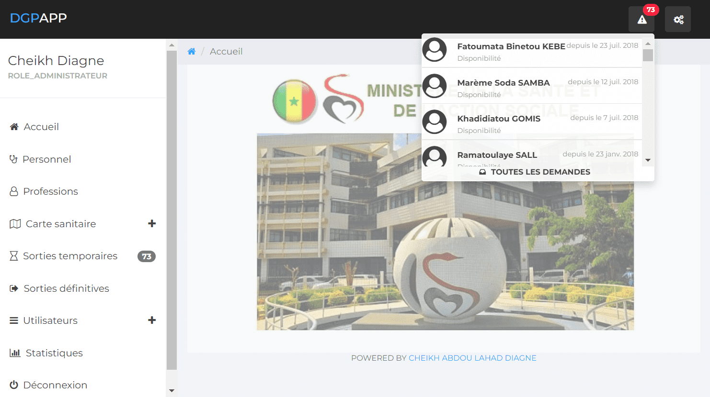

Enjeu
La Direction des Ressources Humaines s’appuie sur iHRIS pour consolider, fiabiliser et exploiter les données des personnels publics, privés et communautaires à l’échelle nationale.
Le dispositif relie les niveaux central, régional, district et établissement public de santé. Sa valeur dépend autant de la qualité des données que de l’autonomie des points focaux.
Contribution
Du paramétrage à l’adoption
Administration fonctionnelle et technique, personnalisation de l’application open source, coordination du déploiement dans 14 régions, collecte et contrôle des données, extraction, tableaux de bord et formation des points focaux.
Participation à la migration vers iHRIS v5, avec Java et Vue.js, ainsi qu’au développement d’outils complémentaires de gestion des contractuels, des sorties et de l’archivage.
Démarche
Le déploiement associe paramétrage, tests, reprise et contrôle des données, formation aux niveaux région, district et établissement, puis accompagnement continu des utilisateurs.
Résultats vérifiés
Un SIRH national opérationnel couvrant environ 25 000 agents de santé, des points focaux formés dans 14 régions et une base structurante pour les indicateurs RH nationaux.


Formation des utilisateurs et aperçu d’un outil complémentaire de gestion du personnel.